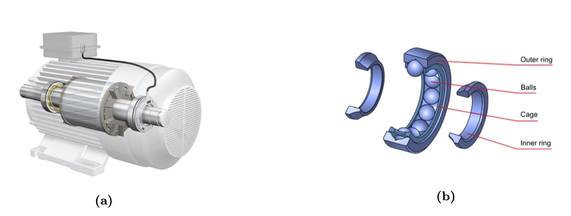

Summer 2023 · IIT Roorkee · 5 min read
This past summer, I had the incredible opportunity to work as a Machine Learning Research Intern at the Indian Institute of Technology, Roorkee. Under the guidance of Professor R. S. Anand, I contributed to a project focused on the Health Condition Monitoring of Ball Bearings using Vibration Signals. My role involved a deep dive into signal processing, vibrational data analysis, and the implementation of robust machine learning pipelines.

The Challenge: Listening to Machines
The core problem we addressed was the significant impact that faults in ball bearings can have on an induction motor's health and longevity. Identifying and differentiating these faults—such as tiny cracks in the outer ring—is crucial for predictive maintenance and preventing catastrophic motor failure. We hypothesized that different faults would produce unique vibration signal signatures, almost like a fingerprint, making them distinguishable through machine learning.

Our Methodology
We structured our approach into a systematic, three-phase workflow. The first phase involved collecting and preprocessing the raw vibration data, where we focused on normalizing the signals to a common scale and segmenting them into manageable frames. Next, in the feature extraction phase, I derived around 14 key statistical features from both the time and frequency domains of the signals, aiming to capture the unique characteristics of different fault conditions. Finally, the third phase was dedicated to modeling and analysis, where we trained various machine learning models on the extracted features and rigorously analyzed their performance.
Key Achievements and Results
Our rigorous methodology yielded highly successful results. We were not only able to successfully interpret the distinct profiles of different faults using our extracted features, but we also identified the most effective techniques for our problem. Through experimentation, the Genetic Algorithm proved to be the most effective feature selection method, while Random Forest was the best-performing classifier. This combination led us to our final high-performance model, which achieved an impressive accuracy of 97%. To make this research more accessible, we also developed a web-based application for signal analysis and model training, allowing users to interact with our findings in a practical way.
Project Walkthrough
I created a short video that walks through the web application we built, demonstrating its capabilities for signal analysis and fault detection. You can see how raw signal data can be uploaded, processed, and classified in near real-time.
Conclusion
This internship was a valuable experience in applying theoretical machine learning concepts to a tangible engineering problem. Our research successfully demonstrated that a combination of advanced signal processing, strategic feature extraction, and machine learning is a powerful approach for health condition monitoring in industrial machinery. It provides a robust foundation for building the next generation of predictive maintenance systems.